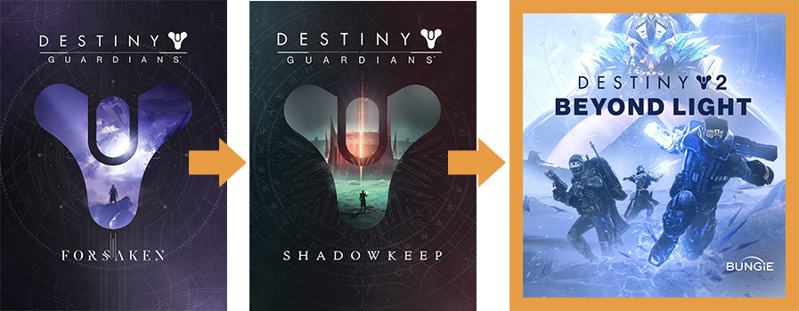
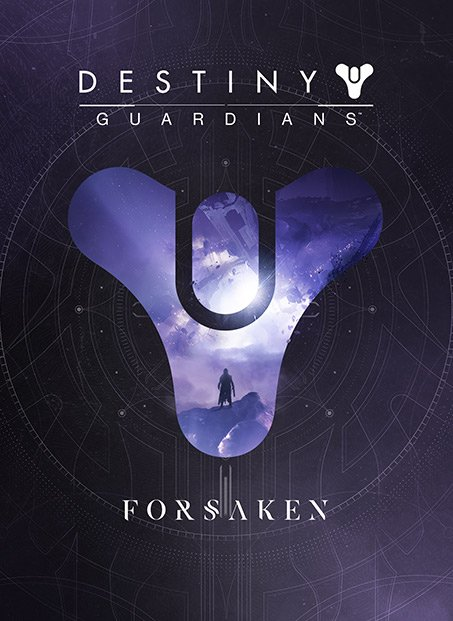
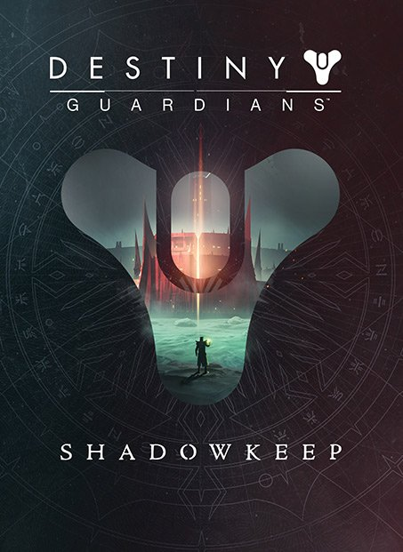
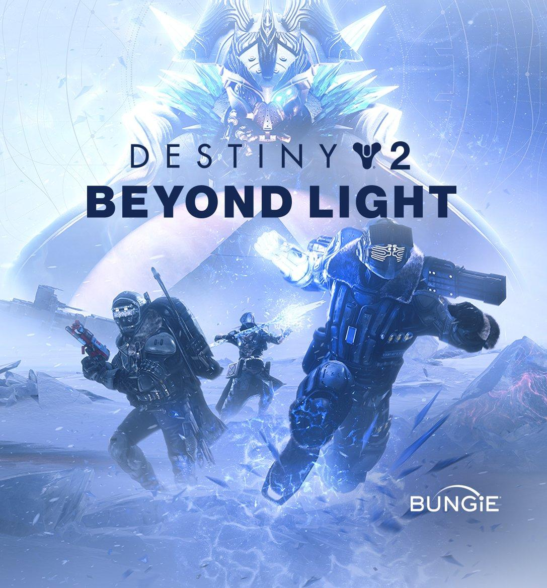

확장팩 소개
세계관 연구
확장팩 순서
확장팩의 출시 순서입니다.

포세이큰 → 섀도우킵 → 빛의 저편
현재 진행 중인 확장팩은 빛의 저편입니다.
확장팩 안내
확장팩의 보상 내역들입니다.
포세이큰
섀도우킵
빛의 저편

데스티니 가디언즈: 포세이큰
- 전용 스토리 미션
- 다양한 추가 장비 이용가능
- 추가 플레이어 능력 개방
- 조각난 왕관 던전
- 마지막 소원 레이드
공식 사이트에서 자세히 보기

데스티니 가디언즈: 섀도우킵
- 전용 스토리 미션
- 다양한 추가 장비 이용가능
- 추가 플레이어 능력 개방
- 이단의 구덩이 던전
- 구원의 정원 레이드
공식 사이트에서 자세히 보기

데스티니 가디언즈: 빛의 저편
- 전용 스토리 미션
- 새로운 시공 능력 개방
- 새로운 행성 유로파 관련 콘텐츠
- 다양한 추가 장비 이용가능
- 딥스톤 무덤 레이드
공식 사이트에서 자세히 보기
확장팩 남은 기간
게임 회사의 일정에 따라 변동 사항이 있을 수도 있습니다.
시즌패스 남은 기간
게임 회사의 일정에 따라 변동 사항이 있을 수도 있습니다.